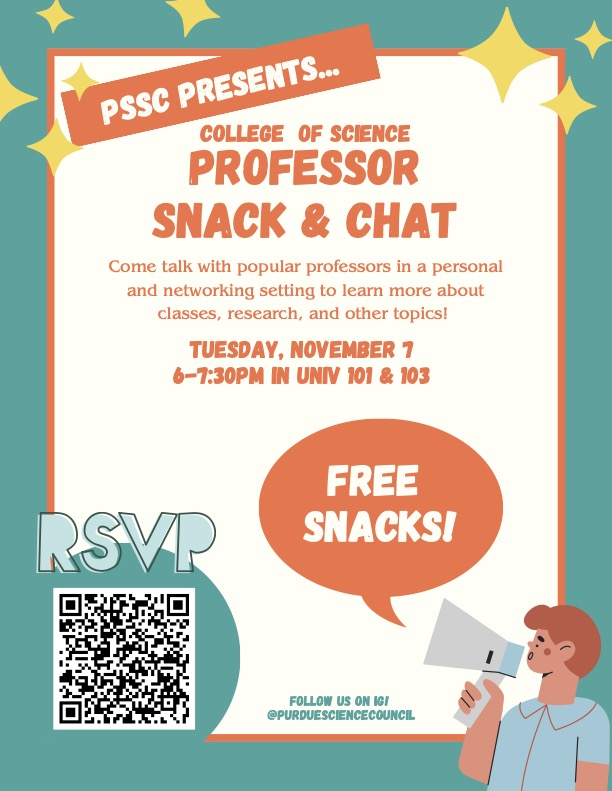

Snack & Chat

Please join us to enjoy snacks with your fellow CoS students and discuss a wide variety of topics with
CoS professors from every major!
Date: Tuesday, November 7th, 2023
Time: 6:00 - 7:30 PM
Location: UNIV 101 & 103
Purdue Student Science Council's committee for campus outreach is dedicated to connecting students
within the College of Science with each other and with faculty.
One of our most popular ways of doing that is with our Professor Snack & Chat event. This event is
held every semester and is a chance for students to connect and speak with their favorite professors
about anything from coursework to research to job outlook.
It is a fantastic opportunity to hear from your professors in a casual setting, where you can both
discuss academia and future opportunities while enjoying your favorite snacks! We love to invite
professors from every major and field of study.
Check our instagram @purduesciencecouncil
for more updates and opportunities!